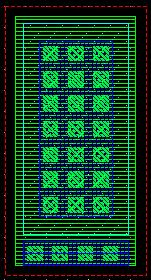
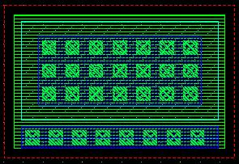

c3t_mp unit width (x) and unit length (y) properties
these layouts show the effect of varying the unit width and unit length for an example c3t_mp cap
unit width (x) = 5u, unith length (y) = 10u

unit width (x) = 10u, unith length (y) = 5u
